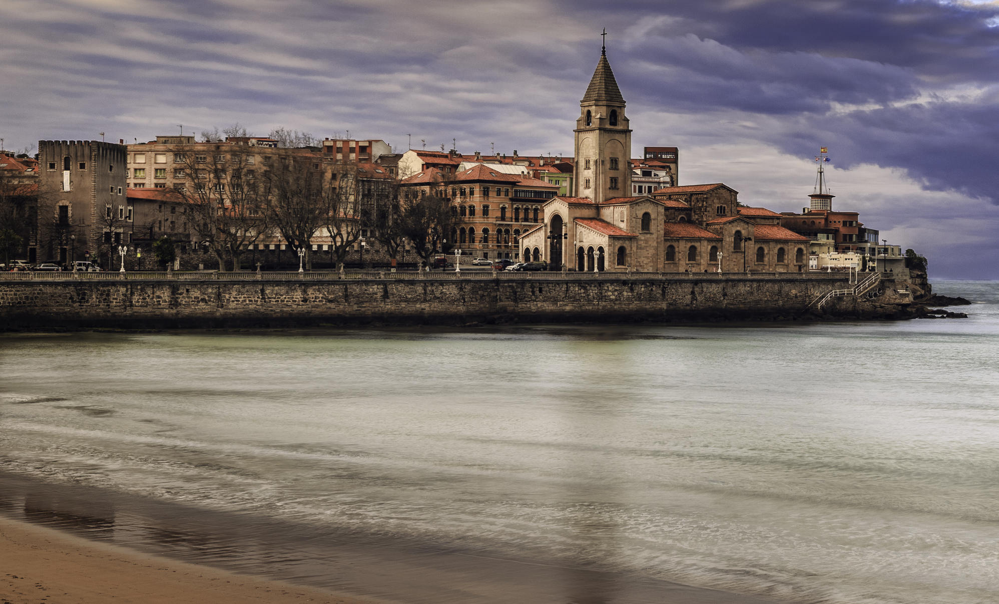
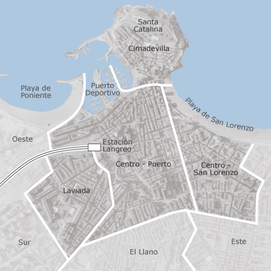
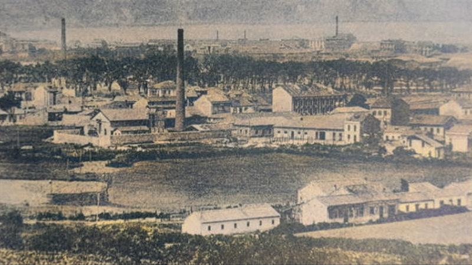
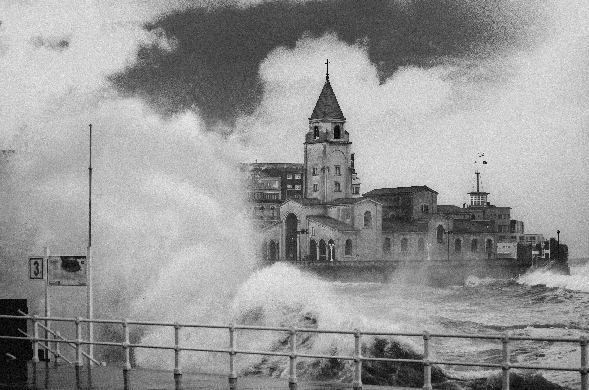
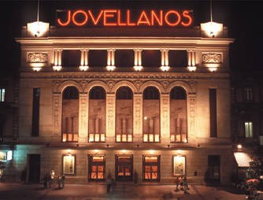

Gijon

Gijón (en asturiano Xixón) es una ciudad española con la categoría histórica de villa. Es el único núcleo de población de la parroquia del mismo nombre. Su concejo —denominación que reciben los municipios en el Principado de Asturias es el más poblado de la comunidad autónoma, con 267 706 habitantes en 2022.
Geográficamente, la ciudad y su término municipal se localizan junto a una bahía en la zona central de Asturias, a 28 km de Oviedo y 26 km de Avilés. Allí forman parte de una gran área metropolitana que abarca veinte concejos de la región. Esta área, vertebrada por una densa red de carreteras y ferrocarriles, contaba con una población de 835 053 habitantes en 2011, los cuales la convierten en la séptima de España. En la península ibérica, la villa y el concejo se sitúan en la parte central de la cornisa cantábrica y, a escala europea, en la zona sur del Arco Atlántico.
Desde su fundación en época romana, el desarrollo del núcleo urbano ha estado vinculado al de su puerto, que actualmente es líder en movimientos de graneles sólidos en España. Hasta fechas recientes, Gijón tuvo un carácter eminentemente industrial, lo que favoreció su gran crecimiento de los siglos class="Romano" xix y class="Romano" xx . No obstante, durante las últimas décadas, la crisis de la siderurgia y el sector naval han llevado a la reconversión de su tejido productivo, transformando la ciudad en un centro turístico, universitario, comercial y de I+D+i. Así, además de contar con una red municipal de museos, alberga la Milla del Conocimiento Margarita Salas. Esta comprende el complejo cultural de la Universidad Laboral, un campus universitario y un parque científico y tecnológico.
La ciudad es conocida por antonomasia como «capital de la Costa Verde» y es asimismo capital de la provincia marítima de Gijón. Por el concejo discurre el Camino de Santiago en su ruta costera y en él tienen su sede el Consejo Consultivo del Principado de Asturias, la Radiotelevisión del Principado de Asturias y el Centro de Seguridad Marítima Integral de Salvamento Marítimo.
Nombre
El origen del nombre de Gijón suscita desde hace tiempo un intenso debate entre los estudiosos. En fecha tan temprana como 1899, Miguel de Unamuno emitió ya su opissnión, según la cual la palabra provendría del latín saxum «peñasco», lo cual tendría relación con las características geográficas del emplazamiento de la ciudad, cuyo núcleo primitivo se asentó en el gran promontorio que hoy se denomina Cerro de Santa Catalina y en el que se ubica el casco histórico de Cimadevilla. Otras interpretaciones de la época buscan el origen del término en voces celtas.
Basándose en el primitivo carácter de Gijón como asentamiento militar, Sánchez propone la palabra sessio, que aparece en expresiones como sessio legionis o in sessione legionum, teoría que reforzaría la presencia de unas «aras sestianas» o «aras sessianas» que algunos autores sitúan en la Campa Torres y Sánchez interpreta como «aras de la sessio» o «aras sessianas», es decir, «aras gijonesas». Otras explicaciones han buscado el origen del término en antropónimos como gegionus, gegion, segius (según Manzanares); sassonius (según Schulze) o hipotéticos *iaionus, *ieionus (según García Arias). Por otra parte, según sostiene el filólogo Xosé Lluis García Arias, la enormemente popular identificación de Gijón con la Gigia, citada por Ptolomeo, en realidad no tendría nada que ver con la urbe asturiana sino que correspondería a una población situada en lo que hoy es territorio leonés, quizá próxima al río Cea. También cabe suponer que puesto que la ciudad fue fundada por la Legio VII Gemina deba de ahí su nombre.
Lengua
El Estatuto de Autonomía del Principado de Asturias prevé la protección, uso y promoción de la lengua asturiana en la comunidad autónoma. La Ley 1/1998, de 23 de marzo , de uso y promoción del bable/asturiano desarrolló la anterior norma y dispuso que los topónimos de la región tendrían la denominación oficial en su forma tradicional. Posteriormente, y siguiendo los pasos descritos por el Decreto 98/2002, de 18 de julio, por el que se establece el procedimiento de recuperación y fijación de la toponimia asturiana, el Gobierno de la comunidad autónoma oficializó los nombres vernáculos de todos los núcleos de población del concejo de Gijón. Así, por ejemplo, el topónimo de la capital municipal pasó a ser bilingüe: «Gijón/Xixón». No obstante, el Decreto 98/2002 indica que para la alteración de la denominación de los concejos deberá tramitarse un expediente conforme a lo dispuesto en la Ley 7/1985, de 2 de abril, reguladora de las Bases del Régimen Local. Según esta última norma, los cambios de denominación de los municipios españoles solo tendrán carácter oficial cuando se publiquen en el Boletín Oficial del Estado. Dado que esto aún no ha sucedido para Gijón, a día de hoy el nombre castellano es el único oficial para el concejo.
Geografía

Gijón está situado en el centro de la costa cantábrica del Principado de Asturias, España, en el suroeste de Europa, al norte de la península ibérica, sobre una rasa litoral en las estribaciones de la cordillera Cantábrica. Forma parte de la vertiente hidrográfica cantábrica y se sitúa en su punto más alto (Pico Cima) a 737 m s. n. m.. El punto más alto de la zona urbana (Ceares) se sitúa a 59 m s. n. m.. El término municipal de Gijón tiene una superficie de 182,1 km² y una forma vagamente rectangular. La ciudad, que ocupa una superficie aproximada de 13,9 km², está situada en el tramo costero central del concejo, en una bahía dividida por el Cerro de Santa Catalina (Cimadevilla) que separa la playa de San Lorenzo al este, del Puerto Deportivo, playas de Poniente y Arbeyal, astilleros y puerto de El Musel, al oeste.
El término municipal de Gijón limita con los siguientes concejos: Carreño al noroeste, Corvera al oeste, Llanera al suroeste, Siero al sur y Villaviciosa al este. Con Sariego sus límites llegan a unirse en un pequeño punto correspondiente a la Peña de los Cuatro Jueces, así llamada por constituir la confluencia de los concejos de Gijón, Villaviciosa, Sariego y Siero.
Clima
El clima de Gijón, determinado por la presencia del mar y la baja altitud del concejo, es un clima oceánico, con abundantes precipitaciones desde el otoño hasta los primeros días de la primavera, y un tiempo más estable y cálido en verano. Según los datos ofrecidos por la Agencia Estatal de Meteorología para la estación meteorológica de Gijón (período 1971-2000), la media del mes más frío (enero) fue de 8,9 °C, la media del mes más cálido (agosto) fue de 19,7 °C y la temperatura media anual es de 13,8 °C (media anual de máximas: 17,6 °C; media anual de mínimas: 9 °C). La nieve cubre ocasionalmente en el invierno los montes del concejo que rodean la ciudad y llega de forma esporádica al centro de la ciudad, con una media de un día de nieve anual.
La precipitación media anual es de 920 l/m². Ello se debe al denominado efecto de ladera, según el cual las lluvias más intensas se localizan en las zonas más altas y las mínimas en zonas costeras del centro y el occidente. Coincidiendo con la época de menos lluvias se dan situaciones de aridez y sequía (el 11 % de los meses hay aridez y el 9 % el déficit hídrico es grave).
Los vientos son esporádicos y estacionales. En invierno soplan preferentemente del sureste, templados y cálidos, a causa de la retirada hacia el sur del anticiclón de las Azores, con lo que las borrascas atlánticas siguen una trayectoria más meridional. En verano la situación se invierte, predominando vientos del nordeste, fríos y secos.
Crisis Industrial

Las últimas décadas del siglo xx trajeron consigo una crisis industrial que afectó sobre todo a la siderurgia y al sector naval al igual que al resto de la industria asturiana, especialmente la minera. A partir de la crisis de 1973, y en especial con los objetivos del Gobierno de España para entrar en la CEE entre 1982 y 1986, la reconversión industrial ocurrió en toda la región. En Gijón únicamente en 1982 se cerraron 71 empresas. ENSIDESA, empresa que había absorbido a UNINSA, efectuó recortes de plantilla. Más adelante, junto a Altos Hornos de Vizcaya, se convirtió en Aceralia y a finales del siglo xx se integró en el grupo europeo Arcelor junto a la luxemburguesa Arbed y la francesa Usinor, absorbidas en la actualidad por Mittal Steel. La industria naval se unificó en Naval Gijón en 1985 y la industria textil prácticamente desapareció en 1990. En 1987 se alcanzó el récord histórico de desempleo, que afectaba a un 26 % de la ciudad.
En 1986 se activó un Plan General de Ordenación Urbana que saneó varias hectáreas del barrio de El Llano. Fue el primero de varios planes urbanísticos que dignificaron zonas marginales como La Calzada y Tremañes o reformularon barrios industriales como El Natahoyo. Con la ayuda de estos cambios y de la recuperación de la economía gijonesa a la par que la española a mediados de los 1990, Gijón se reconvirtió en una ciudad orientada al sector servicios. En el año 1990 se iniciaron las transformaciones que acompañaron a esta nueva etapa con la conversión en parque público de las instalaciones militares del Cerro de Santa Catalina, en Cimadevilla. Se inauguró allí la escultura Elogio del Horizonte, de Chillida. En esta década se emprendió además un ambicioso proyecto de edificaciones públicas a partir del derribo de buena parte del Gijón industrial. La desaparición de industrias portuarias dejó espacio para nuevas playas (Poniente, El Arbeyal) así como al Puerto Deportivo. El cierre de la Fábrica de Moreda originó un barrio entero, el de Moreda, dignificado por el desvío de las vías de ferrocarril desde la estación del Norte hasta la estación de Gijón-Jovellanos (1990).
La desindustrialización continuó en los 2000 afectando a las industrias medianas de la ciudad, como la mina de La Camocha, cerrada en 2008. En esta época se crearon asimismo nuevos barrios como Montevil, Viesques y Nuevo Roces. En la zona este de la ciudad fueron apareciendo los equipamientos que ahora conforman la Milla del Conocimiento Margarita Salas. Estos son el campus universitario, el Parque Científico Tecnológico y la remodelación y acondicionamiento de la Universidad Laboral bajo la marca Laboral, ciudad de la cultura.
Arquitectura

Gijón cuenta con una amplia arquitectura civil, destacando la Universidad Laboral de Gijón (1955) como su edificio más representativo. En su extenso catálogo de patrimonio urbanístico podemos encontrar edificios como el palacio de Revillagigedo, del siglo xviii, la Casa Consistorial (Coello, 1865), la plaza de toros de El Bibio (1888), el Banco de Gijón (Bellido, 1902), la Escuela de Comercio (Del Busto, 1915), Solavieya (1918), La Gota Leche (De la Cruz, 1925), La Escalerona (Fernández-Omaña, 1933), la Casa Rosada (1940), la Casa Sindical (Somolinos, 1966) o el Palacio de Deportes (Arroyo, 1992).
Cultura
La actividad cultural es muy amplia, y hace especial hincapié en la formación pública. Desde 1981 existe una Universidad Popular con talleres y cursos, así como una red de centros sociales y bibliotecas en cada barrio. Tienen especial importancia el Ateneo Jovellanos, institución liberal fundada en 1953 con el impulso del catedrático y político Torcuato Fernández-Miranda, el Ateneo Obrero de Gijón, una entidad cultural con más de cien años de vida, Ateneo de la Calzada, el Antiguo Instituto Jovellanos y un futuro centro cultural en Cimadevilla, la Tabacalera.
Se realizan actividades culturales todo el año, que aumentan considerablemente en los meses de verano, sobre todo en agosto por las fiestas de la Asunción (15 de agosto), con fiestas, música y teatro, que complementan la programación continua del Teatro Municipal Jovellanos.
Cine y teatro

José Luis Garci grabó a principios de la década de 1980 la mayor parte del metraje de Volver a empezar, película que posteriormente obtendría un Oscar de la Academia a la mejor película extranjera. A principios de la década de 1990 hubo un auge de bandas de música indie en la villa, que se conoció como el Xixón Sound. También la comedia La gran aventura de Mortadelo y Filemón fue grabada en parte en la Ciudad de la Cultura de Gijón, conocida como la Universidad Laboral en la parroquia de Cabueñes. En 2006, la ciudad albergó el rodaje íntegro de la película de los hermanos Ulloa, Pudor. Y en 2009, la Laboral y sus alrededores se convertirían en Oxford para la película de Fernando González Molina, Fuga de Cerebros. En 2019 también se rodó en Gijón (concretamente en la Quinta Bauer en Somió, RCAR, calle Corrida y en el bar restaurante El Globo, entre otras localizaciones) la película Si yo fuera rico de Álvaro Fernández Armero para Mediaset y Telecinco.
Gastronomía
Podemos destacar dentro de la comida clásica, como primeros, les fabes, las reinas en la cocina asturiana, ya sea en la conocidísima fabada asturiana con compango (chorizo, morcilla asturiana y lacón), como con almejas, centollo, con caza, etc y el pote asturiano. En los segundos, el puerto aporta sabrosos pescados y mariscos del Cantábrico con el que se realizan recetas tradicionales como la chopa a la sidra, besugo a la espalda, ventresca de bonito o los oricios, aunque también tienen su importancia los platos de carne de las parroquias del interior como la ternera o el pitu de caleya. Los postres típicos son el arroz con leche, tarta charlota, tarta gijonesa, biscuit Gijón, bombones de sidra de. Debería resaltarse que las «princesitas» siguen realizándose de forma artesanal.
Gijón es cantera también de jóvenes cocineros que han rejuvenecido la cocina asturiana gracias a la Escuela de Hostelería de Gijón, en el paseo de Begoña.
Si tienes cualquier duda puedes rellenar el cuestionario: